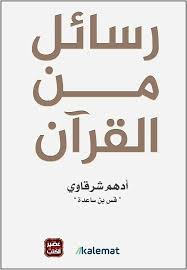

اسم الكتاب: رسائل من القران
المؤلف:ادهم شرقاوي
وصف الكتاب:
"رسائل من القرآن" هو كتاب للكاتب أدهم شرقاوي، يتناول فيه مجموعة من الرسائل والأفكار المستوحاة من آيات القرآن الكريم. يهدف الكتاب إلى تقديم تأملات عميقة حول معاني الآيات وكيف يمكن تطبيقها في الحياة اليومية.
محتوى الكتاب:
- تفسير الآيات: يقدم الكتاب تفسيرًا مبسطًا للآيات القرآنية، مما يساعد القارئ على فهم معانيها العميقة.
- التأملات الروحية: يحتوي على تأملات تساعد القارئ على استنباط الدروس والعبر من النصوص القرآنية.
- التطبيقات العملية: يربط بين الآيات وحياتنا اليومية، مشجعًا على تطبيق القيم القرآنية في السلوك والتعامل مع الآخرين.
- قضايا معاصرة: يناقش الكتاب كيف يمكن أن تكون رسائل القرآن ذات صلة بالقضايا الحديثة والتحديات التي نواجهها.
الكتاب يهدف إلى تعزيز الوعي الديني والروحي، ويشجع على دراسة القرآن بشكل أعمق لفهم رسالته الحياتية.